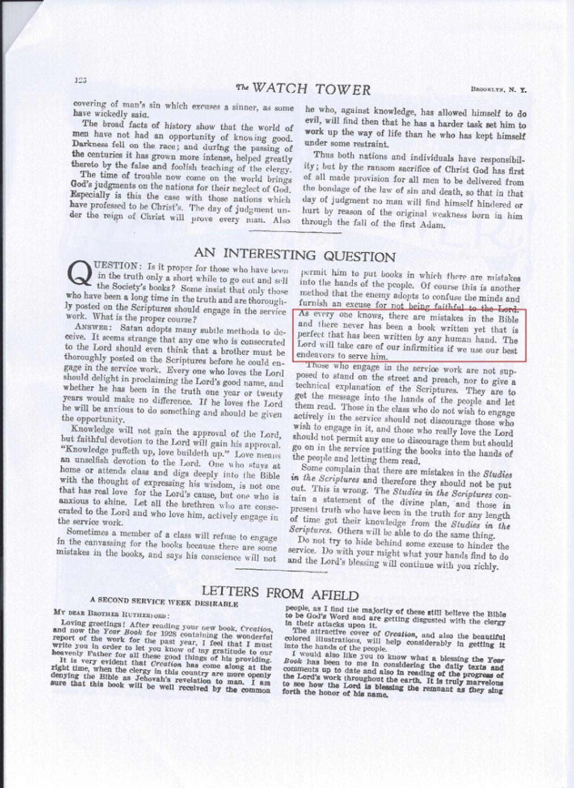
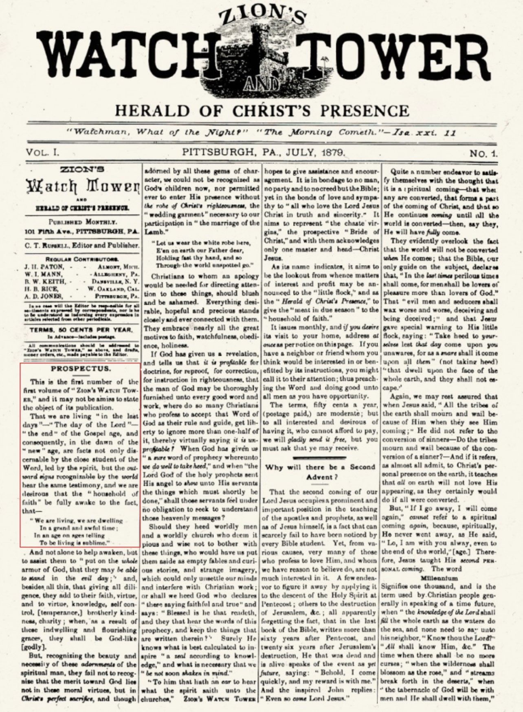
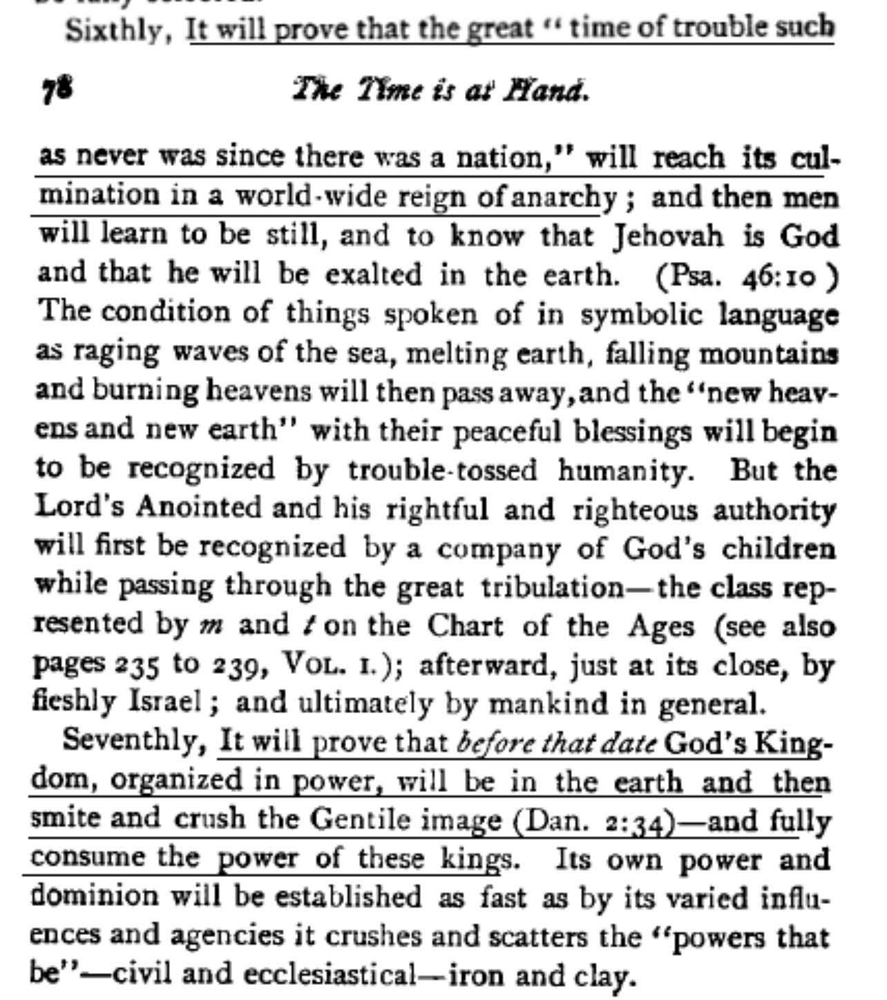

Jehovah’s Witnesses Say that the Bible Has Mistakes
Credit to Many Prophets One Message
It’s interesting to note that the Watchtower Society has admitted that there are mistakes in the Bible:
“As everyone knows, there are mistakes in the Bible and there never has been a book written yet that is perfect that has been written by any human hand.”
Source: The Watch Tower April 15 1928 p.123

Now if the Bible can contain mistakes as the Watchtower Society concedes, then isn’t it reasonable and logical to conclude that their own publications will also contain mistakes?
—————
The Curious Case of Raymond Franz
Credit to Many Prophets One Message
The Watchtower Society is directed by the Governing Body of the Jehovah’s Witnesses. In fact today all activities of the Watchtower Society are under their supervision. They assume responsibility for formulating policy and doctrines, producing material for publications and conventions, and administering its worldwide branch office staff. The size of the Governing Body has varied over time but as of today there are seven members. Let’s see what Watchtower Society publications have to say about the Governing Body:
“However, the Governing Body are appointed through the holy spirit under the direction of Jehovah God and Jesus Christ.”
Source: Watchtower 1990 Mar 15 p.18
“Christ thus leads the congregation by means of the spirit-anointed “faithful and discreet slave” and its Governing Body.”
Source: Examining the Scriptures Daily 2007 p.34
Raymond Victor Franz was a member of the Governing Body from 20th October 1971 until 22nd May 1980 and served at the organisation’s world headquarters for fifteen years, from 1965 until 1980. Franz began working in the organisation’s writing department and was assigned to collaboratively write “Aid to Bible Understanding”, the first religious encyclopedia published by Jehovah’s Witnesses. On 20th October 1971 he was appointed as a member of the Governing Body. In his personal memoir “Crisis of Conscience” Franz said that at the end of 1979 he reached a crossroad:
“I had spent nearly forty years as a full time representative, serving at every level of the organizational structure. The last fifteen years I had spent at the international headquarters, and the final nine of those as a member of the worldwide Governing Body of Jehovah’s Witnesses. It was those final years that were the crucial period for me. Illusions there met up with reality. I have since come to appreciate the rightness of a quotation I recently read, one made by a statesman, now dead, who said: “The great enemy of the truth is very often not the lie—deliberate, contrived and dishonest—but the myth—persistent, persuasive and unrealistic.” I now began to realize how large a measure of what I had based my entire adult life course on was just that, a myth—persistent, persuasive and unrealistic.”
Frustrated by what he viewed as the Governing Body’s overemphasis on its own tradition rather than reliance on the Bible in reaching doctrinal decisions, Franz and his wife decided in late 1979 that they would leave the international headquarters. In 1980 he was disfellowshipped as a result of allegations of apostasy from the faith.
Before his death, Franz wrote two books that related his personal experiences with the Watchtower Society and his views on Jehovah’s Witnesses teachings. The following book cannot be highly recommended enough as it reveals a lot of what went on behind the scenes during his time on the Governing Body.
The apostasy of Raymond Franz should be a cause for reflection. If Jehovah’s Witnesses are going to insist that the appointment of the Governing Body is inspired by the Holy Spirit, then did the Holy Spirit make a mistake when it appointed a future apostate to serve on the Governing Body? Moreover as part of his daily duties of being a member on the Governing Body, Raymond Franz voted on issues and had a hand in shaping the doctrine and policies of the Watchtower Society, actions which impacted (and continue to impact) millions of Jehovah’s Witnesses around the world today. Can we trust that he was being divinely inspired in all that he did?
———————-
Jehovah’s Witnesses’ Contradictory Stances on Organ Transplants
Credit to Many Prophets One Message
The Watchtower Society has claimed to be the only organisation on earth that speaks on behalf of God (whom they call “Jehovah”) and the only means by which God directs his true followers today. On this basis it exerts tremendous control over just about every aspect of the lives of Jehovah’s Witnesses. Here are just some examples of the claims the Watchtower Society has made about itself:
“The Watchtower is not the instrument of any man or set of men, nor is it published according to the whims of men. No man’s opinion is expressed in The Watchtower…”
Source: Watchtower 1931 Nov 1 p.327
“The Lord gives interpretation to his prophecies and causes the same to be published… As certain as the Lord has caused these truths to be published in The Watchtower.”
Source: Watchtower, 1936 Mch 1 p.72–73
“It is vital that we appreciate this fact and respond to the directions of the “slave” as we would to the voice of God, because it is His provision.”
Source: Watchtower 1957 Jun 15 p.370
“The holy spirit is the active force of the living God, which he sends out through his Son, Christ Jesus, and which operates toward Jehovah’s people, enlightening and directing his theocratic organization on the earth today as it did in the days of the apostles.”
Source: Watchtower 1959 Apr 1 p.219
“Consider, too, the fact that Jehovah’s organization alone, in all the earth, is directed by God’s holy spirit or active force. (Zech. 4:6) Only this organization functions for Jehovah’s purpose and to his praise. To it alone God’s Sacred Word, the Bible, is not a sealed book…”
Source: Watchtower 1973 Jul 1 p.402
As you can see, the Watchtower Society has made some bold claims about itself over the last century. Not only has it claimed that it is being inspired like the apostles of Jesus were, but also that any opinions it gives are not of human origin but rather that of God. They have positioned themselves as the sole mouthpiece of God on earth.
If Jehovah’s Witnesses are correct, then we should find no errors and contradictions within their teachings, however when the teachings of the Watchtower Society are put under the microscope what we find is that far from being a divinely inspired organisation, it is in fact a very fallible human affair as its doctrine over the years are full of mistakes and contradictions. We are going to focus on the Watchtower Society’s shifting stance on organ transplants in order to disprove their claims of divine inspiration. Here are a chronological series of quotes from the Watchtower Society’s publications:
“The question of placing one’s body or parts of one’s body at the disposal of men of science or doctors at one’s death for purposes of scientific experimentation or replacement in others is frowned upon by certain religious bodies. However, it does not seem that any Scriptural principle or law is involved. It therefore is something that each individual must decide for himself.”
Source: Watchtower 1961 August 1 p.480
“When there is a diseased or defective organ, the usual way health is restored is by taking in nutrients. The body uses the food eaten to repair or heal the organ, gradually replacing the cells. When men of science conclude that this normal process will no longer work and they suggest removing the organ and replacing it directly with an organ from another human, this is simply a shortcut. Those who submit to such operations are thus living off the flesh of another human. That is cannibalistic. However, in allowing man to eat animal flesh Jehovah God did not grant permission for humans to try to perpetuate their lives by cannibalistically taking into their bodies human flesh, whether chewed or in the form of whole organs or body parts taken from others.”
Source: The Watchtower Nov. 15 1967 p.702
“Regarding the transplantation of human tissue or bone from one human to another, this is a matter for conscientious decision by each one of Jehovah’s Witnesses. Some Christians might feel that taking into their bodies any tissue or body part from another human is cannibalistic… Other sincere Christians today may feel that the Bible does not definitely rule out medical transplants of human organs… It may be argued, too, that organ transplants are different from cannibalism since the “donor” is not killed to supply food.”
Source: The Watchtower March 15 1980 p.31
As you can see, the Watchtower has moved back and forth on this issue over the years, by first permitting organ transplants and leaving the choice down to each Jehovah’s Witness, then prohibiting them and condemning all those who participate as cannibals and finally contradicting themselves again by saying that is down to the discretion of each Jehovah’s Witness whether they view it as cannibalistic or not.
This is by no means a trivial issue that can be simply dismissed, it is medical in nature and therefore has resulted in the unnecessary suffering and death of some of its members. When God directs a person or organisation, then their theology should not contradict itself in such a manner, otherwise what’s the purpose of God’s direction?
Response to Jehovah’s Witnesses’ counter arguments
The typical response from Jehovah’s Witnesses is to dismiss these claims by saying that the Watchtower Society did not make mistakes/contradictions but rather gradually improved its understanding of this issue over time. They call this “new light” or “new spiritual food”, and a Jehovah’s Witness will be quick to point out the Bible verse Proverbs 4:18 which says that the light is getting “lighter and lighter”. This verse is used often (and out of context) by Jehovah’s Witnesses when defending the Watchtower’s many doctrinal changes.
Unfortunately this is not a case of light getting brighter but rather flickering between light and darkness and is therefore a contradiction. It so happens that Charles Taze Russell, the founder of the Watchtower Society, had this to say on the subject of new light:
“If we were following a man undoubtedly it would be different with us; undoubtedly one human idea would contradict another and that which was light one or two or six years ago would be regarded as darkness now: But with God there is no variableness, neither shadow of turning, and so it is with truth; any knowledge or light coming from God must be like its author. A new view of truth never can contradict a former truth. ‘New light’ never extinguished older ‘light,’ but adds to it…. So is it with the light of truth; the true increase is by adding to, not by substituting one for another.”
Source: Zion’s Watch Tower February 1881 p.188
This proves, according to the standards of the Watchtower Society itself, that their shifting stance on organ transplants cannot be equated to light getting brighter.
___
Jehovah’s Witnesses’ False Prophecy of the End of the World
Credit to Many Prophets One Message
The modern-day organisation of Jehovah’s Witnesses began at the end of the 19th century. A man named Charles Taze Russell, who was a student of the Bible and dissatisfied with the doctrines that were being taught by the churches of his day, began publishing his own views on Christianity in books, newspapers, and the journal that is now called “The Watchtower”. Russell started the Watchtower publication in July 1879 under the title “Zion’s Watch Tower and Herald of Christ’s Presence”. According to its first issue, the magazine’s purpose was to draw attention to Russell’s belief that people of his time were “living in the last days”:

In the opening paragraphs we read the following:
“This is the first volume of “ZION’S WATCH TOWER” and it may not be amiss to state the object of its publication. That we are living “in the last days” – “the day of the Lord” – “the end” of the Gospel age, and consequently, in the dawn of the “new” age, are facts not only discernable by the close student of the word, led by the spirit, but the outward signs recognizable by the world bear same testimony, and we are desirous that the “household of faith” be fully awake to the fact, that – We are living, we are dwelling in a grand and awful time; In an age on ages telling to be living is sublime.”
So we can see that from its very inception, the purpose behind the organisation that is today the Jehovah’s Witnesses was apocalyptic in nature. In other words, its goal was to bring attention to the impending end of the world as Russell saw it.
THE YEAR 1914, A FALSE PROPHECY
It wasn’t long before Russell was providing specific dates for the end of the world. From the publication “The Time Is At Hand”, printed in 1889, we read the following on pages 98 and 99:
Russel wrote that it was an “established truth” that the end of the world would come within 26 years, that is, by the year 1914. With it would be the “overthrow of all present governments”, a matter that would “culminate quickly”. This was by no means a one-off proclamation, Russell repeated similar claims throughout his publications in the years that followed. For example, two years later, another book by Russell, “Thy Kingdom Come” was published in 1891, and on page 153 we find the same prediction about 1914 repeated:
The next year, 1892, in the January 15th issue, the Watchtower stated that the final “battle” had already begun. It now went so far as to provide the exact month in which the world would end, October 1914:
This short item appearing in the July 15th, 1894, issue of the Watchtower reveals how they viewed world conditions of that time as clear proof that the world was then about to enter its final throes, with its last gasp coming in 1914. Note the statement that these predictions are “God’s dates” i.e. not those of man:
Exactly what did Watchtower publications teach would take place by the time October 1914 came? The book “The Time Is At Hand”, published twenty-five years before 1914, set out seven points as follows. Note how the first paragraph bases these points not on speculation but rather “Bible evidence”, i.e. all the claims made within are Scriptural:

As can be noted in the material above, it is clearly stated in no uncertain terms that among other things the following would take place:
- The year 1914 “will be the farthest limit of the rule of imperfect men”
- The world’s governmental institutions would come to an end
- God’s kingdom will “obtain full, universal control”, and that it will be “firmly established in the earth on the ruins of present institutions”
Even as late as 1911, just three years before the alleged end of the world, the Watchtower still proclaimed that the “full end” would come in October 1914. Watchtower readers are informed in this material from the June 15th, 1911, issue:
Here the mention of “the full end of Babylon” is a reference to the end of all world organisations and religions, as Jehovah’s Witnesses believe that all other organisations and religions are part of “Babylon the Great”, a world empire of false religion under the control of Satan.
THE COVER-UP
The year 1914 came and went without any of the predicted events occurring – the world’s governments and religions were still standing, as indeed they still are today, over a hundred years later. Charles Taze Russell died in 1916. He left behind a legacy of end time prophecies, not one of which had brought the results foretold. He also left behind thousands of confused followers. The Watchtower book “Light I”, published in 1930, page 194, describes the situation in this way:
So, just who was to blame for all this confusion and disappointment? By reading the Watchtower Society’s recent publications, one might gather that Russell, the Watchtower president, did not speak specifically about just what 1914 would bring. They imply that any strong expectations or dogmatic claims were the responsibility of others, the readers. An example of this is found in what was for many years the official history of the organisation, the 1959 book “Jehovah’s Witnesses in the Divine Purpose”, page 52:
We can see that rather than taking responsibility and admitting that Russell and Watchtower teaching on a core doctrine were completely wrong, instead the blame is pinned on those who have no choice but to blindly follow such teachings.
With the realisation that 1914 was a false prophecy, the Watchtower publications initiated a cover-up. Recall that prior to 1914, Russell’s publications repeated the claim that the world governments would come to an end. Here is a snippet from the 1889 edition of the book “The Time Is At Hand”:
Contrast its use of language, that God’s kingdom “will obtain full, universal control”, with a post-1914 edition of the same book which states that God’s kingdom “will begin to assume control”:
We can see that post-1914 editions of this book try to cover up the false prophecy by changing the wording. Few Jehovah’s Witnesses today have any concept of the magnitude of the claims made about the year 1914. Those expectations now receive only the briefest of mention in the organisation’s publications; some are totally passed over.
Even as late as 1994, adjustments were still being made in order to cover up the embarrassment of 1914. Evidence of this can be seen in the masthead of the “Awake!” magazine. Up until October 22nd, 1995, it read:
The statement that “this magazine builds confidence in the Creator’s promise of a peaceful and secure new world before generation that saw the events of 1914 passes away”, appeared year after year from 1982 until October 22nd, 1995. With the November 8th, 1995 issue, the statement was altered to read “this magazine builds confidence in the Creator’s promise of a peaceful and secure new world that is about to replace the present wicked, lawless system of things”:
Very frequently the tactic employed by the organisation is that of emphasising the absence of specific terminology, as if the non-use of particular words or phrases frees them from having made false predictions in the name of God. The March 22nd, 1993 issue of the magazine “Awake!”, on page 3 under the heading “Why So Many False Alarms?”, presents an example of this:
The accompanying footnote contains the following:
The argument of the Watchtower Society is that if one does not use expressions such as “this is a direct revelation from Jehovah”, and avoids applying such terms as “infallible” and “inspired” to himself, then the things said and the claims made by him are to be viewed as essentially harmless voicing of mere opinion.
The problem with this explanation is that numerous publications prior to 1914 presented their chronological predictions as the product of God’s guidance upon His people. God’s name and his Word were certainly involved in all that was presented to readers of their publications. Consider some of the earlier quotations in this post:
- Statements declaring the Watchtower time calculations as being “God’s dates, nor ours”
- Statements that the Bible evidence would “prove” as “a fact firmly established by the Scriptures” that 1914 would mark “the farthest limit of the rule of imperfect men”
Readers who came across such statements at the time of their publication would have been left in no doubt that the 1914 predictions were divinely backed and not just mere opinion or speculation.